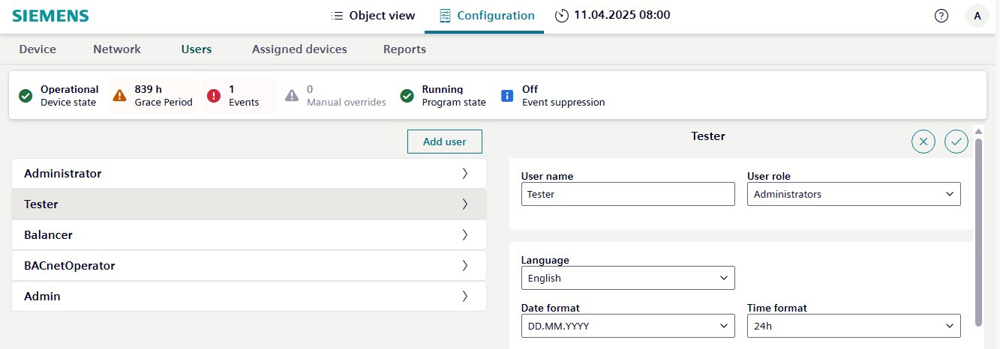

Managing user profiles
Managing password security
To help ensure a secure operating environment, comply with the following password recommendations when adding user profiles:

Setting | Description |
|---|---|
User name | Type a user name. Each user profile must have a unique User name. |
User role | Select a role from the drop-down list. The User role controls access to functions and tools. |
Language | Select the user interface language. |
Date format | Select a date format. For example, DD.MM.YYYY, YYYY/MM/DD or MM-DD-YYYY. |
Time format | Select the 24h or 12h time format. |
Change password | Remember to use a strong, unique password and avoid reusing passwords across multiple systems or accounts. |